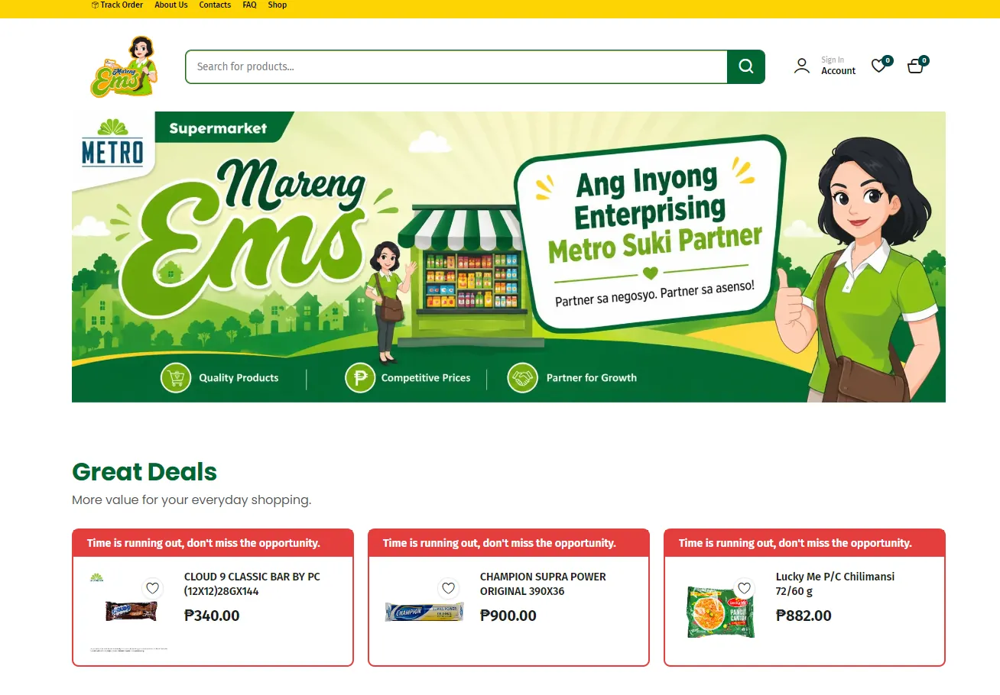
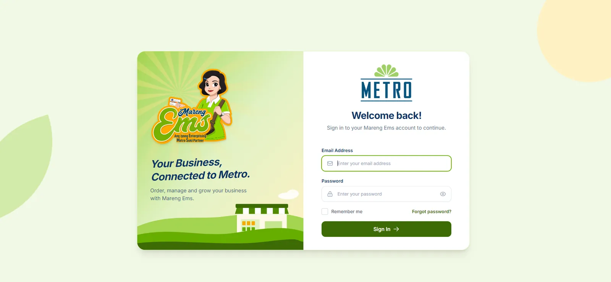

Application continuity
Addressed OMS defects and improved existing workflows while preserving the established application and its integration responsibilities.
Company project · E-commerce & order management
A connected B2B2C commerce platform with a public WooCommerce storefront and a Laravel Order Management System. My work spans OMS improvements and integration support, plus deployment and SSL configuration for the storefront.


Overview
Marengems combines a public WooCommerce storefront at marengems.ph with a Laravel-based Order Management System at oms.marengems.ph. The systems serve different roles within a connected B2B2C order workflow, with API integration linking online commerce and order operations.
This case study separates my work on the OMS from my work on the storefront infrastructure. I did not originally build the entire OMS from scratch. My contributions have included improving and maintaining the existing application and supporting the storefront deployment.
My role
The storefront role described here is deployment and SSL setup; it does not imply I developed the whole storefront.
System architecture
High-level conceptual view; detailed network and infrastructure configuration is intentionally not published.
Challenges & solutions
Addressed OMS defects and improved existing workflows while preserving the established application and its integration responsibilities.
Set up SSL termination through the OCI Load Balancer, coordinating DNS and certificate requirements across infrastructure and security teams.
Maintained the REST API connection between WooCommerce order activity and the Laravel OMS.
Supported application migration work from AWS to OCI for the OMS environment.
Technology
Results & impact
My contributions supported storefront availability over HTTPS, continued operation of the OMS, and the connection between the commerce and order systems through a cloud migration period. No performance figures or business results are inferred.
Project gallery
Let's connect
Let's discuss your software project and delivery needs.